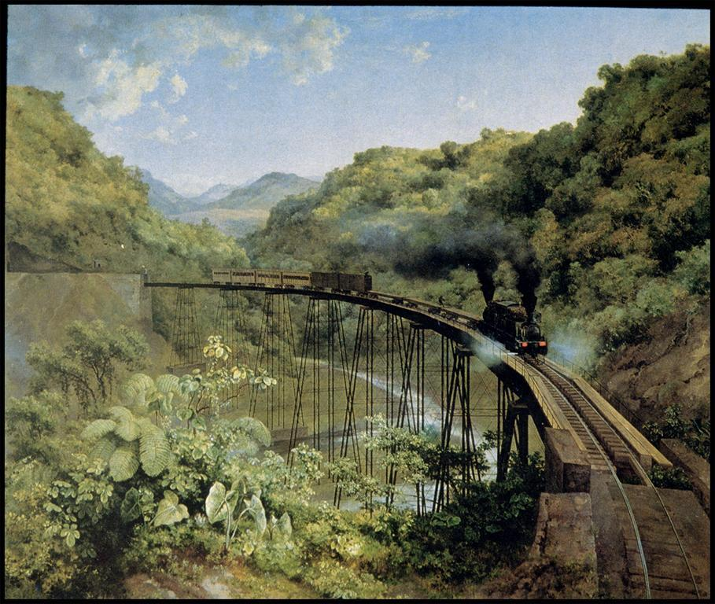
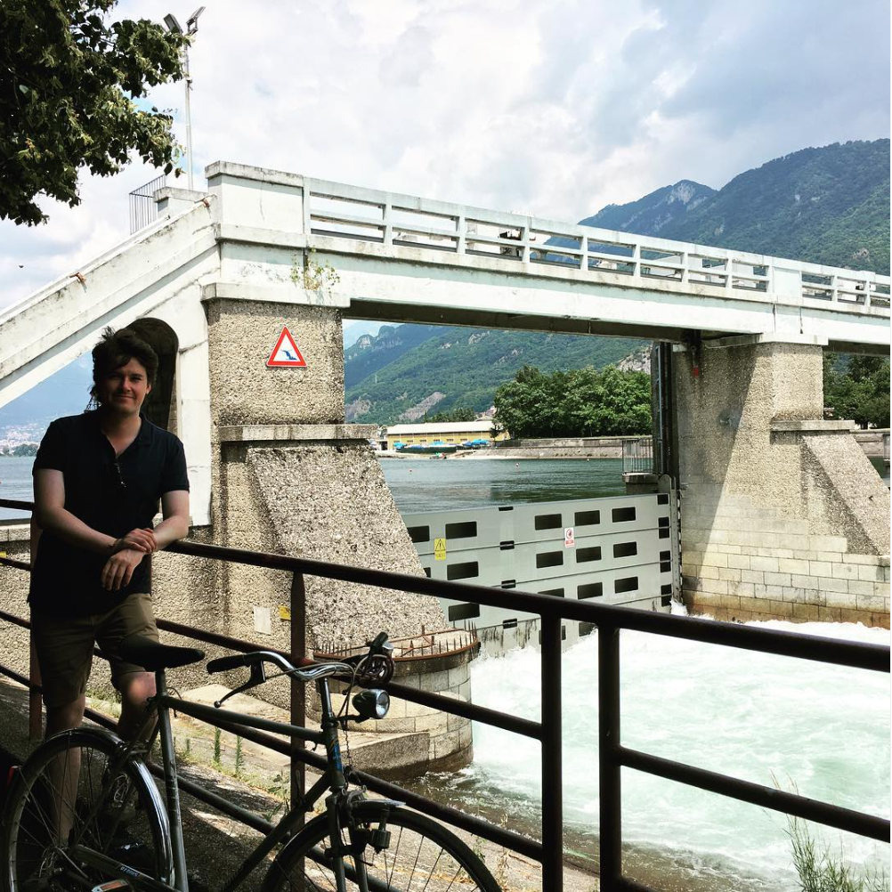

"Creando puentes" literally means "building bridges".
"El puente de Metlac", José María Velasco (1881).
¿Porqué un puente?
Dear Hana, I came across the idea of this blog as an opportunity to build a bridge that will allow us to establish a new form of communication. Many things were explained and clarified from my side in our last "long" converstions by chat. I described many ideas and I did a summary of the events that I considered important regarding the time development after our separation. If you read those messages with calm, perhaps you will find a bit of sense and coherence in their development, especially if you pay attention to the dates I describe. I know I also wrote that with some frustation in our exchange of "what I did wrong" and "what you did wrong", perhaps you could also feel it while reading it. For that, I apologize in case it sounded mean or rude to you. That was not my intention and I tried to be as clear as possible regarding the dates in which key events happend between us this year.
I consider it was important for you to see that there is a logic in how I have been approaching to you, and that there is an understanding of the mistakes that happened then. But the most important, I assume my responsibility and the consequences of the errors I have done, which now gives me a better perspective to start to build something again for us, because I believe it is still very possible.
A bridge then is a way to allow communication to flow and cross from one side to another. A new communication that I intend to happen between us, Hana, since after all what we have said to each other, I believe it is clear how much I care about about you and how many feelings are still present inside me, and maybe inside of you as well. Perhaps, a bit of watering can awake the seed 🙂.
How to achieve this?
Here, in this blog, I will be present for you, to share, provide and communicate my ideas and thoughts. I aspire to develop a new type of relation between us, maybe more as friends than lovers at the beginning as you said to me once, because I understand I am not in the position to ask and give you full love in the distance and withouth healing what happen before between us.
Now, I am happy to share with you my intention, that is to awake one day the love we still are capable of. Create a better, more mature and confident relation, which will require strong fundations. And comunication is perhaps one of the most important aspects, because while communicating, new paths can become open and if we both coincide in them, then we may walk together again, hand to hand.
Speaking of bridges, here I am next to one.
Actualidad
Ahora mismo yo estoy con mucho que hacer aqui en mi cotidianidad. Mañana mismo tengo un viaje al norte de Italia. Tengo la visita de mi familia aqui en casa y es para mi muy importante mostrarles algunos lugares que considero muy especiales aqui en Europa. Ya hemos viajado un poco en las semanas anteriores, pero aún tenemos mucho que ver en el futuro.
El viaje de mañana será solo una pequena forma de progresar en el objetivo mayor. Regresaré a inicios de año y te escribiré entonces algunas nuevas ideas que ya tengo en la mente y te haré saber cómo ha ido en este viaje para nosotros.
Espero que puedas encontrar la motivacion y la voluntad de hacerme saber tambien algo de ti.
¿Cómo te encuentras?
¿Qué sentiste al ver los glaciares en Argentina y cómo terminarás el año?
Me haría muy feliz saber algo de ti, querida Hana.